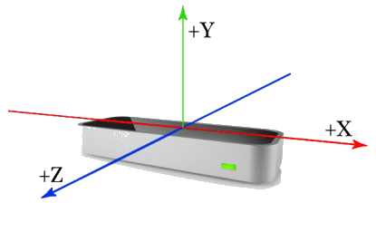

Welcome! Before you get started, let's go over some of Mocha's elements.
Scroll all the way down to begin.
The above image is a screenshot of what you see when you begin Mocha.
At the top and center right of the screenshot, there is a red dot.
The dot shows where your hand is with respect to the Leap Motion device that is tracking your hand.
Let's talk about the Leap Motion.
Before you use the Leap Motion, make sure the Leap Motion:
Using the axis in the image below, your hand's position is parsed and given to the Synthesizer to play sounds.

When the Synthesizer is playing:
Click begin to start making music